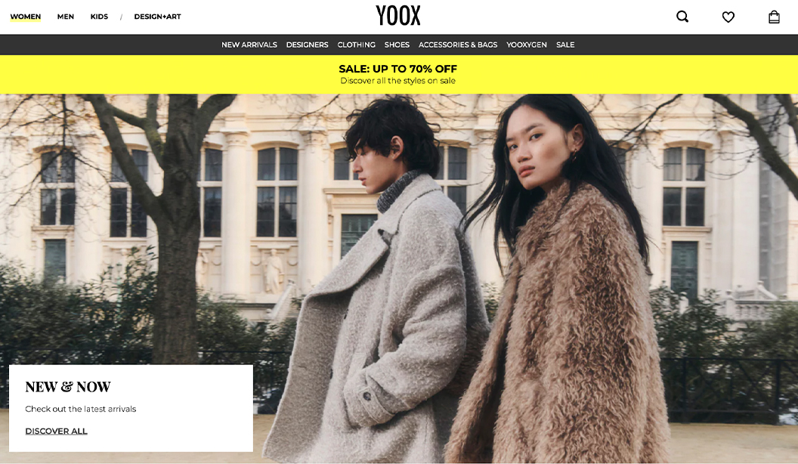
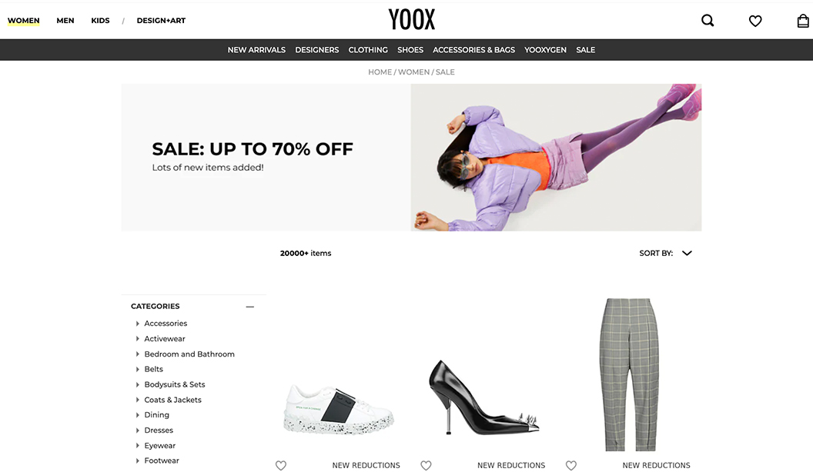
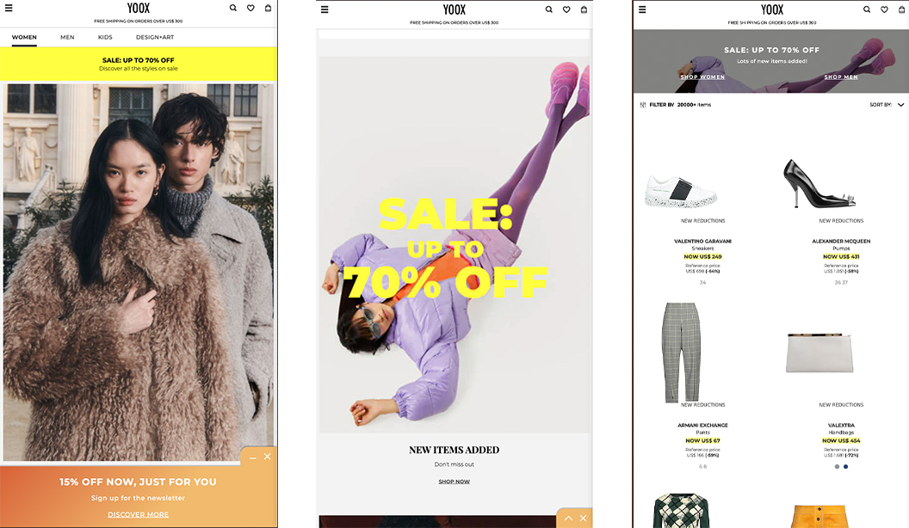

Company: YOOX Net-A-Porter, Luxury Fashion
Position: Campaign Developer
Date: Jan 24 - Jul 24
Services: Backend system management
YOOX NET-A-PORTER GROUP is the world's leading online luxury and fashion retailer serving more than 4.3 million customers in 180 countries around the world.

My primary responsibilities in this role was managing the backend system and uploading marketing campaigns to the YOOX websites and mobile app for twelve APAC countries. This position required a high level of adaptability and technical proficiency, as I was tasked with mastering six distinct software platforms within a limited training period of just four days. Also, due to team members being located in various regions, including Japan and primarily Milan, I faced significant time zone challenges in communication.

I balanced tight deadlines, tracked frequent updates to artwork and copy, and ensured timely uploads while staying flexible for last-minute changes. Clear communication with cross-functional teams was key to maintaining accuracy and efficiency.
This experience significantly enhanced my ability to manage complex workflows, adapt to dynamic environments, and deliver results under pressure. Additionally, this role reinforced my belief that the foundation of a smooth workflow, particularly the functionality of a website, is undeniably the core and most critical aspect of any user experience.
